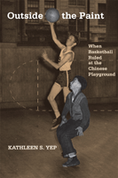

<body bgcolor="#FFFFFF" text="#000000" link="#0000FF" vlink="#CC0000" alink="#CC0000"><center><hr width="350" size="1" align="center" noshade>Breaking out of Chinatown by shooting and dribbling<hr width="350" size="1" align="center" noshade><p><a href="https://cdcshoppingcart.uchicago.edu/Cart/ChicagoBook.aspx?ISBN=9781592139422&&PRESS=temple" target="_top">Buy this book!</a> | <a href="https://cdcshoppingcart.uchicago.edu/Cart/Cart.aspx?PRESS=temple" target="_top">View Cart</a> | <a href="https://cdcshoppingcart.uchicago.edu/Cart/Cart.aspx?PRESS=temple" target="_top">Check Out</a></p><p></p></center><!--none//--><h1>Outside the Paint</h1>
<H2>When Basketball Ruled at the Chinese Playground</H2>
<h3>Kathleen S. Yep</h3>
<P>cloth 1-59213-942-6 $25.50, Apr 09, <FONT COLOR=#990033>Available</FONT>
<br>Electronic Book 1-59213-944-2 $25.50 <FONT COLOR=#990033>Available</FONT>
<BR> 216 pp
5.5x8.25
1&nbsp;figure 19&nbsp;halftones
</P><BLOCKQUOTE><I><i>"Prodigiously researched and vividly realized, </i>Outside the Paint<i> tells a story previously all but unknown. Kathleen Yep has made an important contribution to the scholarship of the city game."</i><b>&#151Jeremy Schaap</b>, <i>New York Times</i> best-selling author of <i>Cinderella Man: James J. Braddock, Max Baer and the Greatest Upset in Boxing History</i> and <i>Triumph: The Untold Story of Jesse Owens and Hitler's Olympics</i></I></BLOCKQUOTE>
<p><i>Outside the Paint</i> takes readers back to the Chinese Playground of San Francisco in the 1930s and 1940s, the only public outdoor space in Chinatown. It was a place where young Chinese American men and women developed a new approach to the game of basketball&#151with fast breaks,
intricate passing and aggressive defense&#151that was ahead of its time.</p>
<p>Drawing on interviews with players and coaches, Kathleen Yep recounts some surprising stories. From the success of the Hong Wah Kues, a professional barnstorming men's basketball team and the Mei Wahs, a championship women�s amateur team, to Woo Wong, the first Chinese athlete to play in Madison Square Garden, and his extraordinarily talented sister Helen Wong, who is compared to Babe Didrikson.</p>
<p><i>Outside the Paint</i> chronicles the efforts of these highly accomplished athletes who developed a unique playing style that capitalized on their physical attributes, challenged the prevailing racial hierarchy, and enabled them, for a time, to leave the confines of their segregated world. As they learned to dribble, shoot, and steal, they made basketball a source of individual achievement and Chinese American community pride.</p>
<BR>&nbsp;<h2>Excerpt</h2><P>Excerpt available at <a href="http://www.temple.edu/tempress">www.temple.edu/tempress</a></p>
<BR>&nbsp;<h2>Reviews</h2>
<p><i>"Yep's sports research helps fill a scholarly void in Asian American studies and serves as an inspiration to scholars." </i>
<br>&#151;<b><i>Nichi Bei Times</i></b>
<p><i>"This readable volume provides compelling information about the experiences of Chinese American basketball players in San Francisco in the 1930s-40s.... Providing historical information that may be difficult to find in the broader literature on the history of US sports, this book will interest not only students of sports but also those pursuing work in Asian American studies, ethnic studies, and US immigration history. Though accessible to beginners, it also offers information of interest to scholars." </I>
<br>&#151<b><i>Choice</b></i>
<p><i>"Yep brings a unique perspective to her scholarly analysis of the experiences of these Asian American youth. Her research, based primarily on personal interviews and contemporary press reports, is meticulous and thorough, as evidenced by her extensive endnotes and bibliography. Although its highest and best use may be as a text for sociology or anthropology classes, this book will also have special appeal to readers with an interest in Chinese American culture." </i>
<br>&#151;<b><i>Pacific Historical Review</i></b>
<p><i>"This book accomplishes much more than simply documenting the explosion of basketball�s popularity in San Francisco�s Chinatown. Yep explores several sociological themes throughout the book�s chapters, such as how sports help marginalized segments of society develop a sense of belonging, and how sports gain political importance among segregated groups�.For this reason, </i>Outside the Paint<i> is not simply a book about basketball, but a vivid description of how sports affect the identity of groups and their interactions with larger society."</i><br>&#151;<b><i>Contemporary Sociology</i></b>
<p><i>"An interesting view of basketball as a vehicle in a marginalized community, and the role it played in moving some ethnic members into more �mainstream� acceptance�. Yep�s book is extremely well researched and both the footnotes and the bibliography are worth careful reading�The players and teams are not well known outside the small Chinatown community, but the stories of how they created a greater sense of community in Chinatown and instilled pride through athletic prowess is well worth reading� Though less sport history than sociology of sport, the book is a powerful statement on the status and acceptability of non-European immigrants in and by American society."</i><br>&#151;<b><i>The Journal of Sport History</i></b>
<p><i>"[E]xcellent for basketball fans and also for anyone who wants to understand some previous United States history regarding racial issues�. The book shows that the Chinese in San Francisco were segregated and confined to Chinatown. But playing basketball gave them opportunities typically not available to the Chinese of that time.... [There] are excellent stories of sports and the success that sports allowed." </i>
<br>&#151;<b><i>Multicultural Review</i></b>
<p><i>"[E]minently readable�</i>Outside the Paint<i> is a generous addition to the literature on the history and sociology of sport. Her oral histories are an invaluable contribution to the historical record of Chinese American life in the early twentieth century. Additionally, Yep's book is a welcome work in the burgeoning literature on Chinese American life in the interwar years that is not subordinated to the dominant historical narrative of Chinese exclusion.... [Yep's] book vividly brings to life the everyday social experiences of Chinese American youth in San Francisco's Chinatown in the wake of the New Deal and in the shadow of a looming world war. For this alone </i>Outside the Paint<i> is a valuable resource for a broad readership of students, scholars, as well as a general public interested in sports history, Chinese American history, urban history, and the history of gender and race in the U.S." </i><br>&#151;<b><i> The Journal of Asian American Studies</i></b>
<BR>&nbsp;<h2>Contents</h2><P>
<p>Acknowledgments
<br>Introduction
<br>1. The Chinese Playground
<br>2. The Hong Wah Kues Discover America
<br>3. The Mei Wahs Knew How to Use Their Elbows and Push
<br>4. �Mr. Chinese Cager� Plays Madison Square Garden
<br>5. Helen Wong and the �Muscle Molls�
<br>Conclusion: The Chinese Playground and Yao Ming in the Era of Globalized Sports
<br>Notes
<br>Bibliography
<br>Index
</P><BR>&nbsp;<H2>About the Author(s)</H2>
<table><tr><td valign="top"><img src="/tempress/authors/2005_au1.gif" height="90" width="75"></td><td width="100%" valign="middle"><p><b>Kathleen S. Yep</b> is Assistant Professor of Asian American Studies and Sociology at Pitzer College of the Claremont Colleges.</P></td></tr></table>
<BR><H2>Subject Categories</H2>
<p><A HREF="/tempress/asian_amer.html" TARGET="_top">Asian American Studies</a>
<BR><A HREF="/tempress/sports.html" TARGET="_top">Sports</a>
<BR><A HREF="/tempress/history.html" TARGET="_top">History</a>
</p>
<BR><h2 class="inpageheading">In the series</H2>
<P><I><a href="http://www.temple.edu/tempress/asam_history.html" onMouseOver="window.status='Click for other books in this series!'; return true;" onMouseOut="window.status=''; return true;" target="_top">Asian American History and Culture</a></i>, edited by K. Scott Wong, Linda Trinh V�, and Cathy Schlund-Vials.
</p><p>Founded by Sucheng Chan in 1991, the <I>Asian American History and Culture</I>, series has sponsored innovative scholarship that has redefined, expanded, and advanced the field of Asian American studies while strengthening its links to related areas of scholarly inquiry and engaged critique. Like the field from which it emerged, the series remains rooted in the social sciences and humanities, encompassing multiple regions, formations, communities, and identities. Extending the vision of founding editor Sucheng Chan and emeriti editor Michael Omi and David Palumbo-Liu, series editors K. Scott Wong, Linda Trinh V�, and Cathy Schlund-Vials continue to develop a foundational collection that embodies a range of theoretical and methodological approaches to Asian American studies.</p>
<p align="center"><a href="https://cdcshoppingcart.uchicago.edu/Cart/ChicagoBook.aspx?ISBN=9781592139422&&PRESS=temple" target="_top">Buy this book!</a> | <a href="https://cdcshoppingcart.uchicago.edu/Cart/Cart.aspx?PRESS=temple" target="_top">View Cart</a> | <a href="https://cdcshoppingcart.uchicago.edu/Cart/Cart.aspx?PRESS=temple" target="_top">Check Out</a></p><p><font face="Arial" size="1"><a href="copyright.html" onMouseOver="window.status='Web Copyright Policy';return true;" onMouseOut="window.status=''" title="Web Copyright Policy">&copy;</a> 2015 <a href="http://www.temple.edu" target="new" onMouseOver="window.status='Link to Temple University home page';return true;" onMouseOut="window.status=''" title="Link to Temple University home page">Temple University</a>. All Rights Reserved. http://www.temple.edu/tempress/titles/2005_reg.html</font></p>